Visuals

V0001 · From cash flow to value per share (base case)
Baseline chart of our dataset model_dcf_bridge
Facts & sources (0)
- our data: data/clean/model_dcf_bridge.json
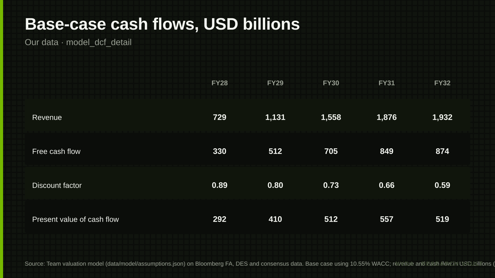
V0002 · Base-case cash flows, USD billions
Baseline chart of our dataset model_dcf_detail
Facts & sources (0)
- our data: data/clean/model_dcf_detail.json
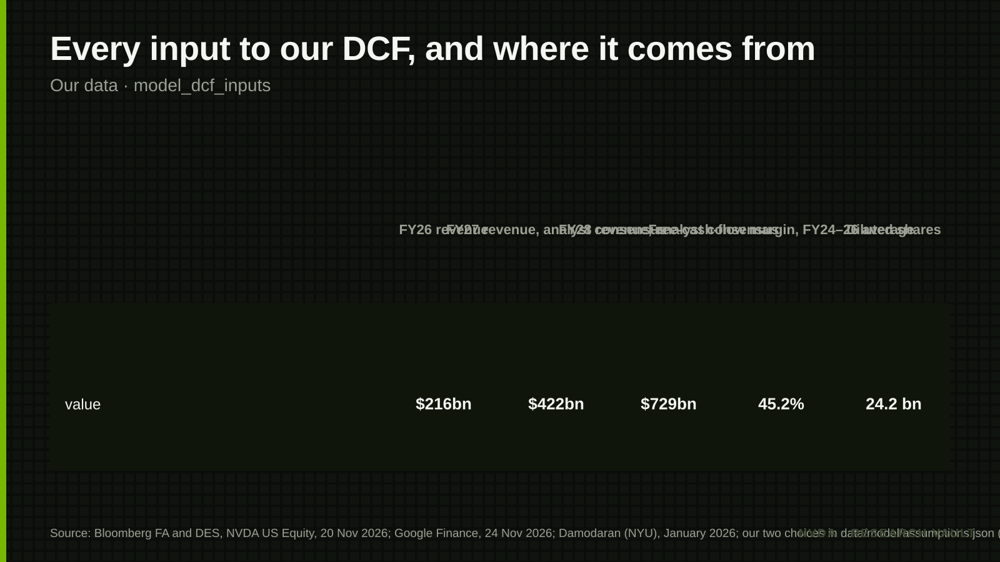
V0003 · Every input to our DCF, and where it comes from
Baseline chart of our dataset model_dcf_inputs
Facts & sources (0)
- our data: data/clean/model_dcf_inputs.json
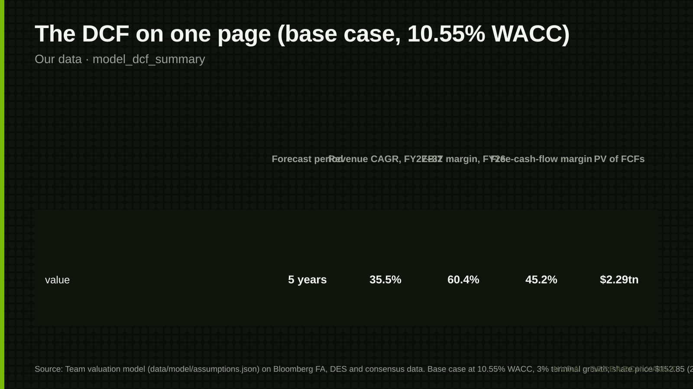
V0004 · The DCF on one page (base case, 10.55% WACC)
Baseline chart of our dataset model_dcf_summary
Facts & sources (0)
- our data: data/clean/model_dcf_summary.json
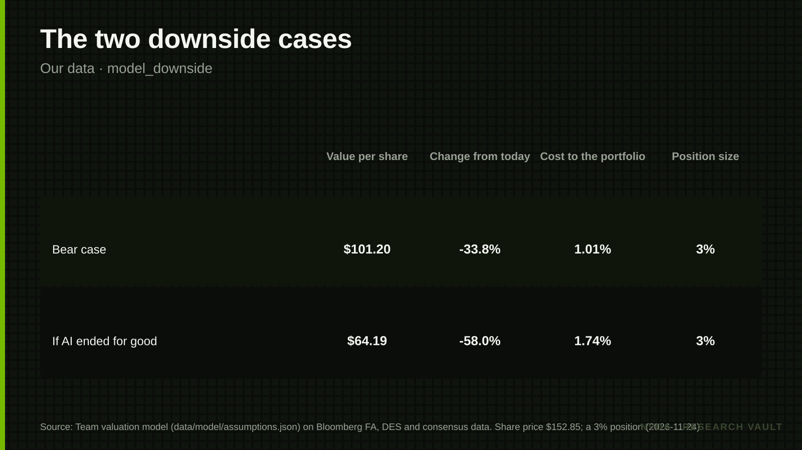
V0005 · The two downside cases
Baseline chart of our dataset model_downside
Facts & sources (0)
- our data: data/clean/model_downside.json
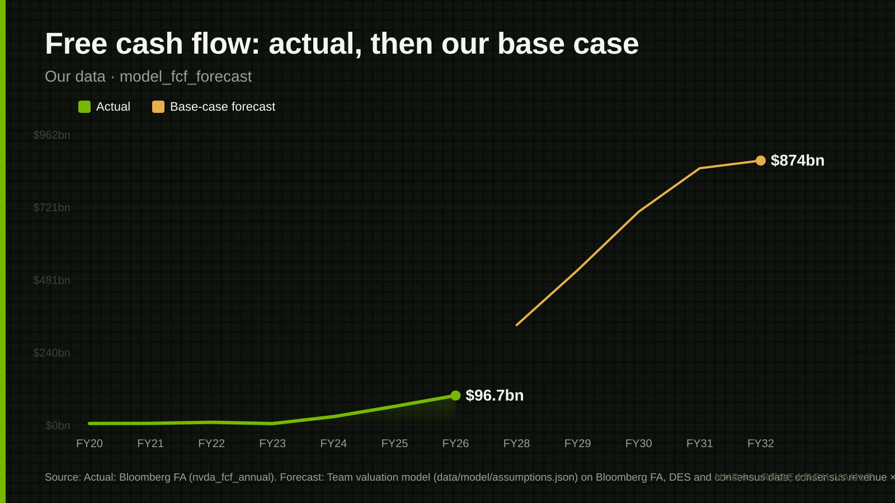
V0006 · Free cash flow: actual, then our base case
Baseline chart of our dataset model_fcf_forecast
Facts & sources (0)
- our data: data/clean/model_fcf_forecast.json
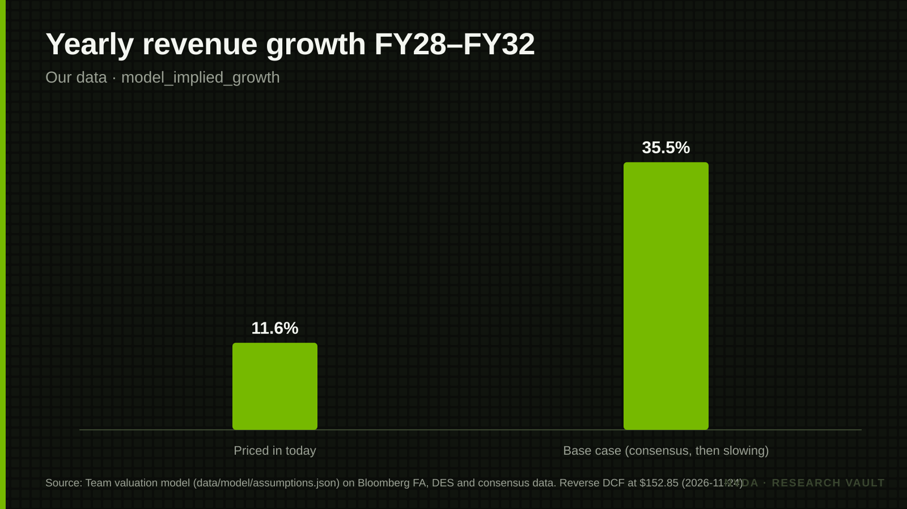
V0007 · Yearly revenue growth FY28–FY32
Baseline chart of our dataset model_implied_growth
Facts & sources (0)
- our data: data/clean/model_implied_growth.json
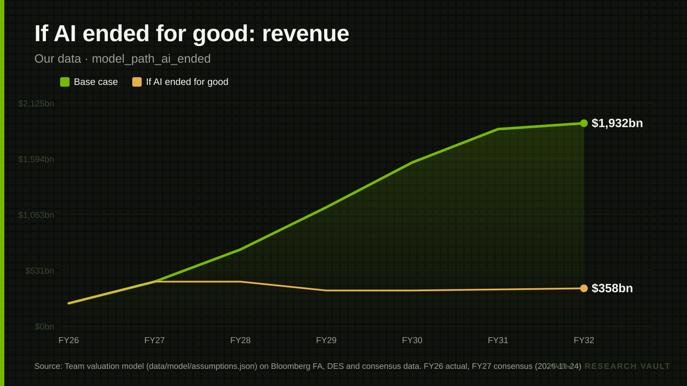
V0008 · If AI ended for good: revenue
Baseline chart of our dataset model_path_ai_ended
Facts & sources (0)
- our data: data/clean/model_path_ai_ended.json
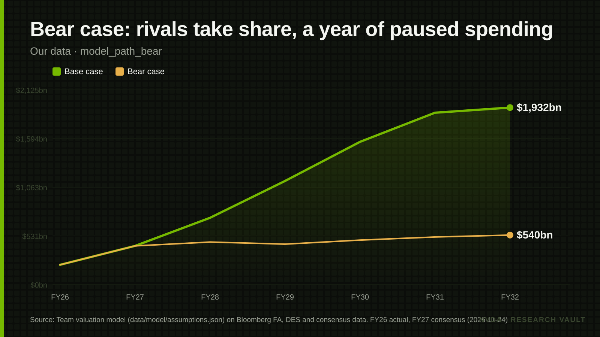
V0009 · Bear case: rivals take share, a year of paused spending
Baseline chart of our dataset model_path_bear
Facts & sources (0)
- our data: data/clean/model_path_bear.json
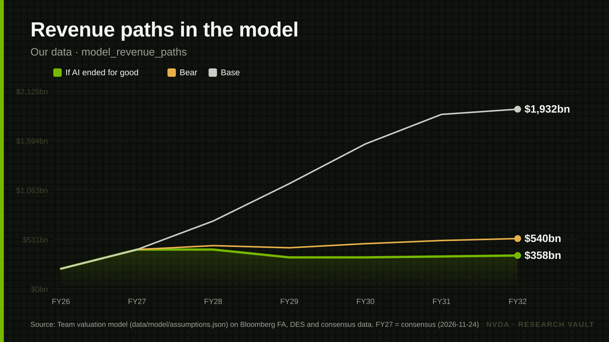
V0010 · Revenue paths in the model
Baseline chart of our dataset model_revenue_paths
Facts & sources (0)
- our data: data/clean/model_revenue_paths.json
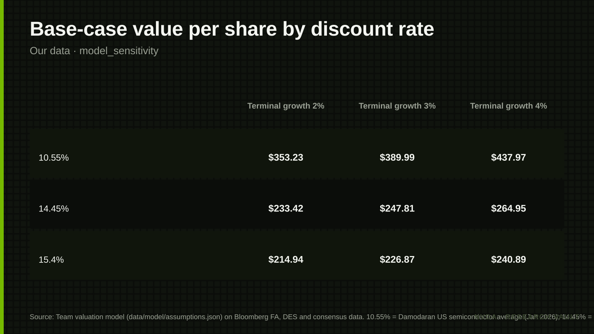
V0011 · Base-case value per share by discount rate
Baseline chart of our dataset model_sensitivity
Facts & sources (0)
- our data: data/clean/model_sensitivity.json

V0012 · From our round-one target to today's base case
Baseline chart of our dataset model_target_bridge
Facts & sources (0)
- our data: data/clean/model_target_bridge.json
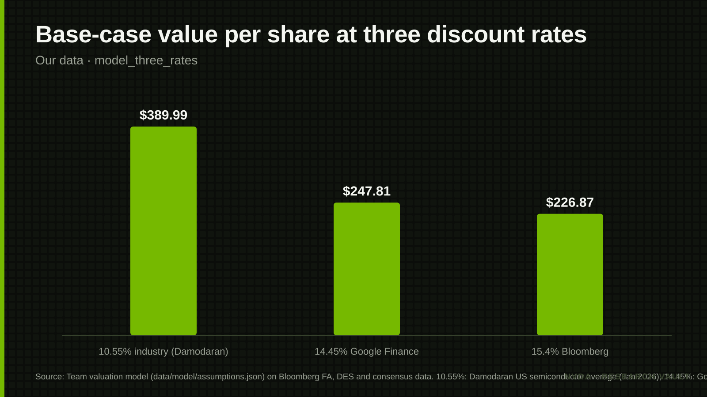
V0013 · Base-case value per share at three discount rates
Baseline chart of our dataset model_three_rates
Facts & sources (0)
- our data: data/clean/model_three_rates.json

V0014 · What one NVIDIA share is worth
Baseline chart of our dataset model_valuation
Facts & sources (0)
- our data: data/clean/model_valuation.json

V0015 · Our values against analysts’ 12-month price targets
Baseline chart of our dataset model_vs_analysts
Facts & sources (0)
- our data: data/clean/model_vs_analysts.json

V0016 · What 44 Wall Street analysts rate NVIDIA
Baseline chart of our dataset nvda_analyst_ratings
Facts & sources (0)
- our data: data/clean/nvda_analyst_ratings.json

V0017 · Three largest direct customers, share of NVIDIA revenue
Baseline chart of our dataset nvda_customer_concentration
Facts & sources (0)
- our data: data/clean/nvda_customer_concentration.json

V0018 · NVIDIA Data Center revenue by quarter
Baseline chart of our dataset nvda_datacenter_quarterly
Facts & sources (0)
- our data: data/clean/nvda_datacenter_quarterly.json

V0019 · Who NVIDIA sold to last quarter (FY27 Q3, to Oct 2026)
Baseline chart of our dataset nvda_dc_customer_mix
Facts & sources (0)
- our data: data/clean/nvda_dc_customer_mix.json
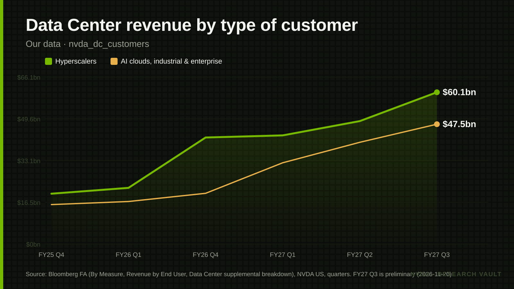
V0020 · Data Center revenue by type of customer
Baseline chart of our dataset nvda_dc_customers
Facts & sources (0)
- our data: data/clean/nvda_dc_customers.json

V0021 · NVIDIA greenhouse gas emissions
Baseline chart of our dataset nvda_emissions
Facts & sources (0)
- our data: data/clean/nvda_emissions.json
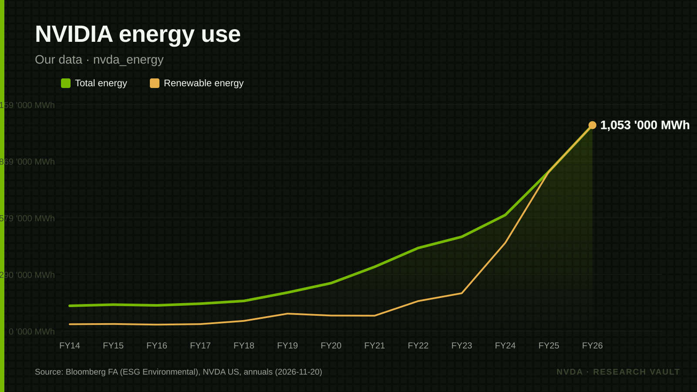
V0022 · NVIDIA energy use
Baseline chart of our dataset nvda_energy
Facts & sources (0)
- our data: data/clean/nvda_energy.json

V0023 · NVIDIA earnings per share vs consensus
Baseline chart of our dataset nvda_eps_quarterly
Facts & sources (0)
- our data: data/clean/nvda_eps_quarterly.json

V0024 · Bloomberg ESG pillar scores, out of 10
Baseline chart of our dataset nvda_esg_scores
Facts & sources (0)
- our data: data/clean/nvda_esg_scores.json
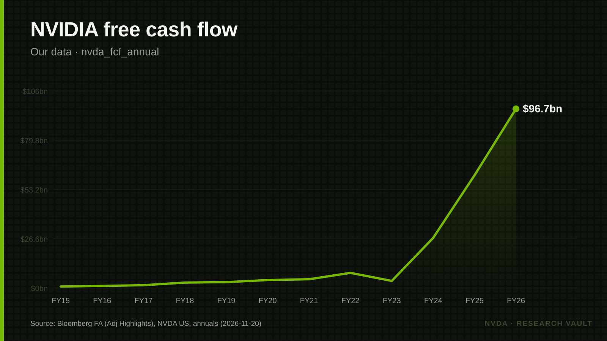
V0025 · NVIDIA free cash flow
Baseline chart of our dataset nvda_fcf_annual
Facts & sources (0)
- our data: data/clean/nvda_fcf_annual.json

V0026 · NVIDIA margins
Baseline chart of our dataset nvda_margins_annual
Facts & sources (0)
- our data: data/clean/nvda_margins_annual.json

V0027 · NVIDIA price/earnings at each fiscal year end
Baseline chart of our dataset nvda_pe_history
Facts & sources (0)
- our data: data/clean/nvda_pe_history.json

V0028 · Share of NVIDIA energy from renewables
Baseline chart of our dataset nvda_renewable_share
Facts & sources (0)
- our data: data/clean/nvda_renewable_share.json
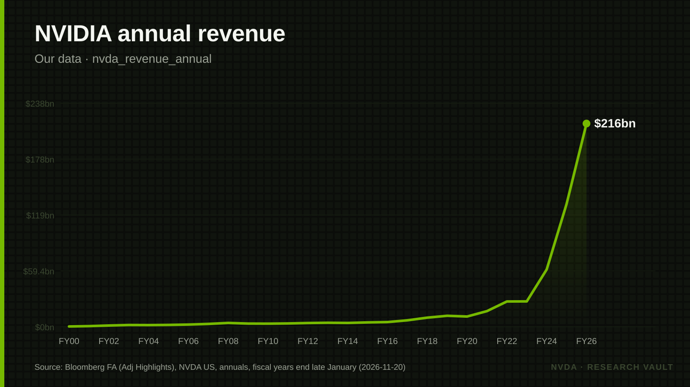
V0029 · NVIDIA annual revenue
Baseline chart of our dataset nvda_revenue_annual
Facts & sources (0)
- our data: data/clean/nvda_revenue_annual.json
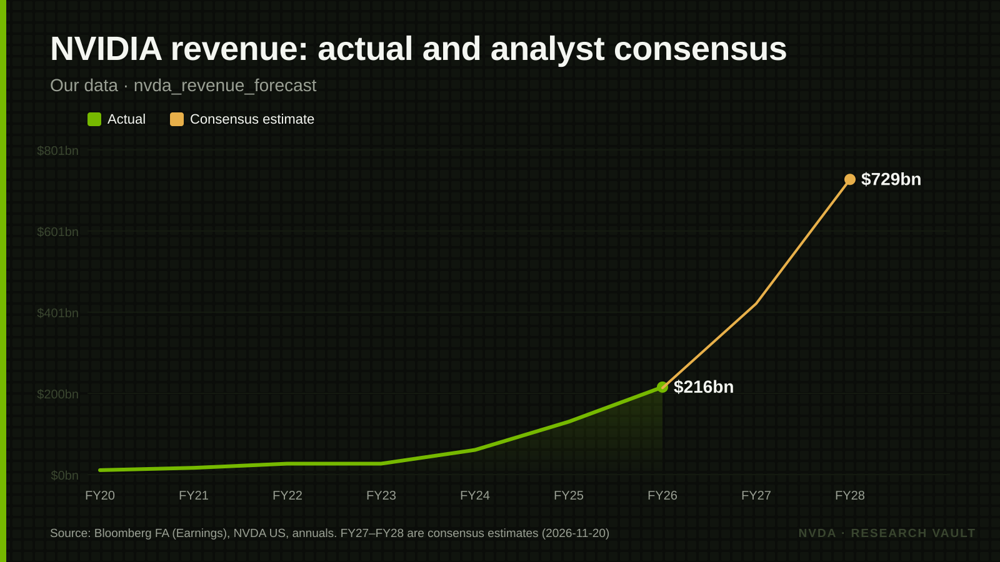
V0030 · NVIDIA revenue: actual and analyst consensus
Baseline chart of our dataset nvda_revenue_forecast
Facts & sources (0)
- our data: data/clean/nvda_revenue_forecast.json
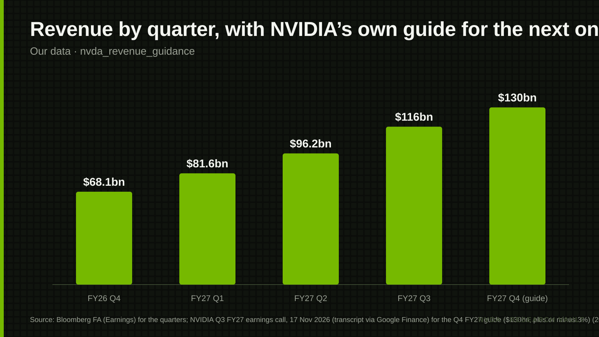
V0031 · Revenue by quarter, with NVIDIA’s own guide for the next one
Baseline chart of our dataset nvda_revenue_guidance
Facts & sources (0)
- our data: data/clean/nvda_revenue_guidance.json
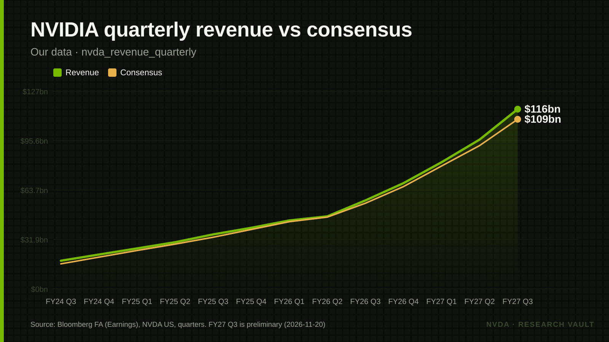
V0032 · NVIDIA quarterly revenue vs consensus
Baseline chart of our dataset nvda_revenue_quarterly
Facts & sources (0)
- our data: data/clean/nvda_revenue_quarterly.json

V0033 · How far revenue beat consensus
Baseline chart of our dataset nvda_revenue_surprise
Facts & sources (0)
- our data: data/clean/nvda_revenue_surprise.json
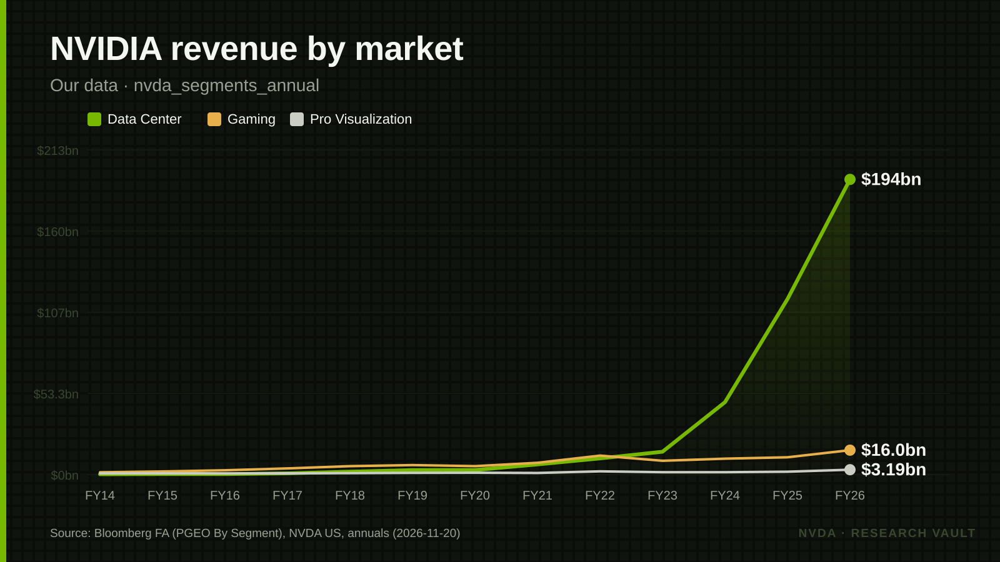
V0034 · NVIDIA revenue by market
Baseline chart of our dataset nvda_segments_annual
Facts & sources (0)
- our data: data/clean/nvda_segments_annual.json
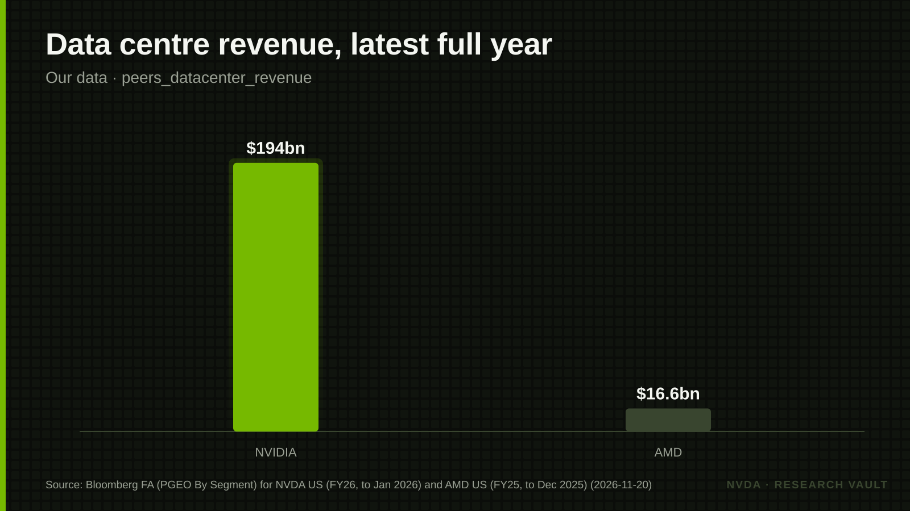
V0035 · Data centre revenue, latest full year
Baseline chart of our dataset peers_datacenter_revenue
Facts & sources (0)
- our data: data/clean/peers_datacenter_revenue.json
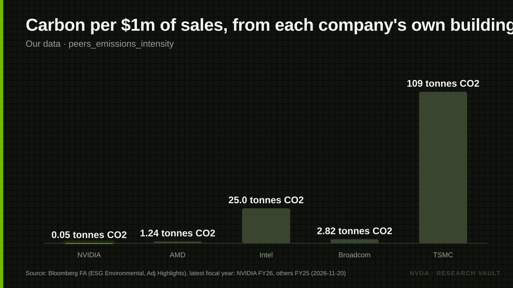
V0036 · Carbon per $1m of sales, from each company's own buildings and power (Scope 1 + 2)
Baseline chart of our dataset peers_emissions_intensity
Facts & sources (0)
- our data: data/clean/peers_emissions_intensity.json
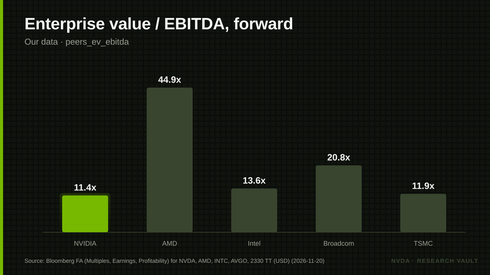
V0037 · Enterprise value / EBITDA, forward
Baseline chart of our dataset peers_ev_ebitda
Facts & sources (0)
- our data: data/clean/peers_ev_ebitda.json
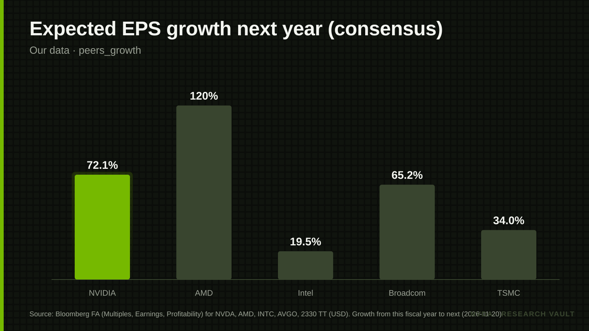
V0038 · Expected EPS growth next year (consensus)
Baseline chart of our dataset peers_growth
Facts & sources (0)
- our data: data/clean/peers_growth.json
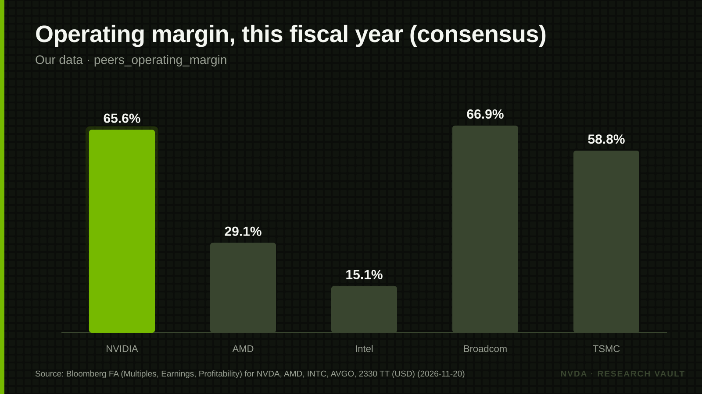
V0039 · Operating margin, this fiscal year (consensus)
Baseline chart of our dataset peers_operating_margin
Facts & sources (0)
- our data: data/clean/peers_operating_margin.json
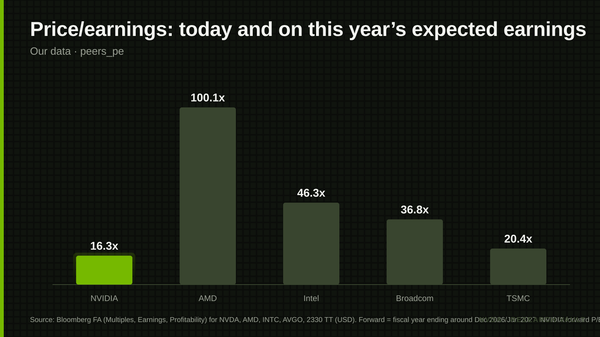
V0040 · Price/earnings: today and on this year’s expected earnings
Baseline chart of our dataset peers_pe
Facts & sources (0)
- our data: data/clean/peers_pe.json

V0041 · PEG: forward P/E divided by expected EPS growth
Baseline chart of our dataset peers_peg
Facts & sources (0)
- our data: data/clean/peers_peg.json
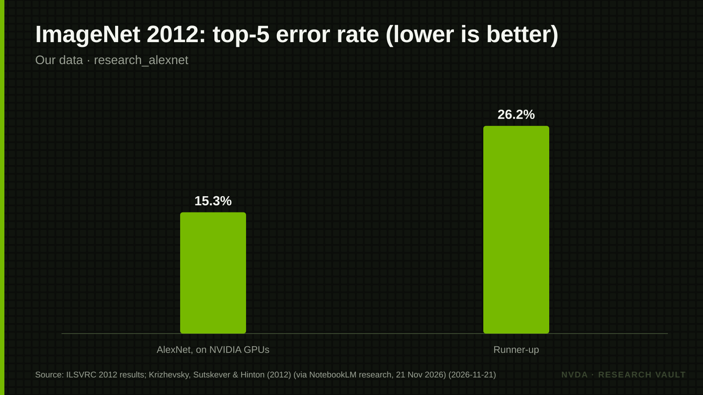
V0042 · ImageNet 2012: top-5 error rate (lower is better)
Baseline chart of our dataset research_alexnet
Facts & sources (0)
- our data: data/clean/research_alexnet.json
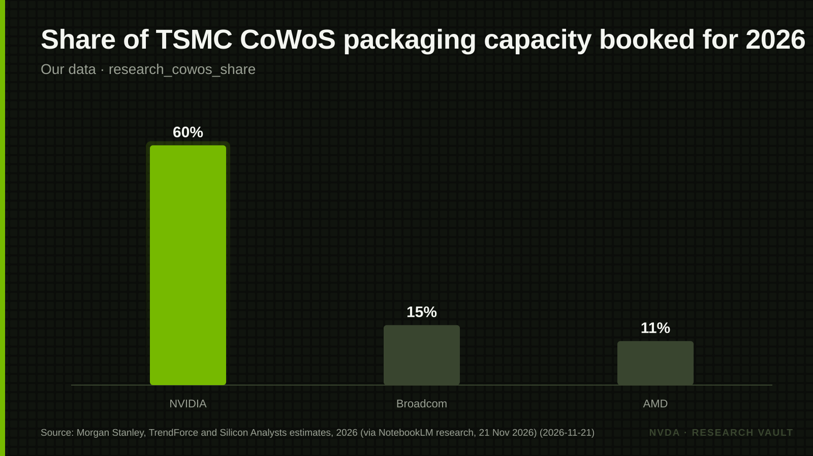
V0043 · Share of TSMC CoWoS packaging capacity booked for 2026
Baseline chart of our dataset research_cowos_share
Facts & sources (0)
- our data: data/clean/research_cowos_share.json

V0044 · Figures from the research notes
Baseline chart of our dataset research_facts
Facts & sources (0)
- our data: data/clean/research_facts.json
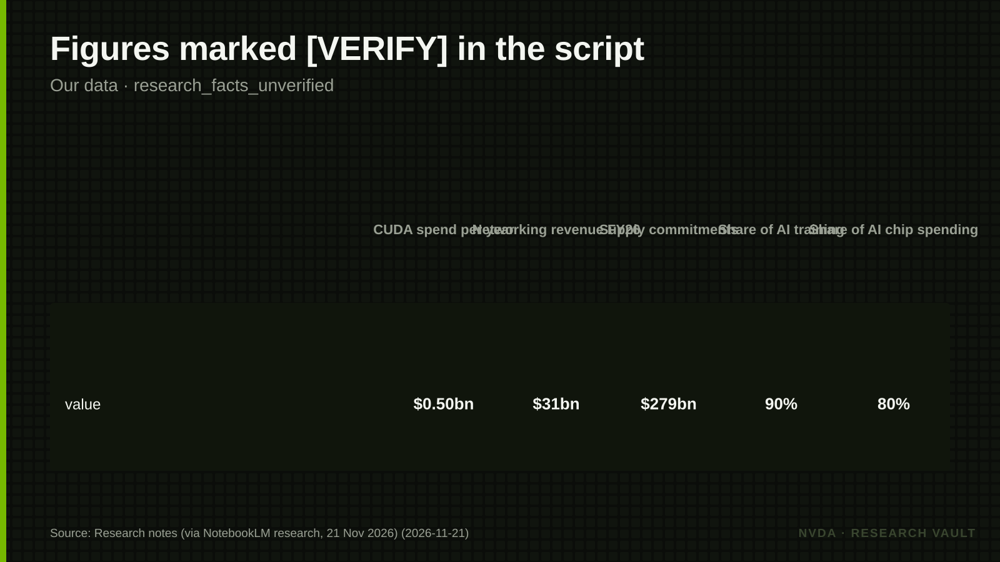
V0045 · Figures marked [VERIFY] in the script
Baseline chart of our dataset research_facts_unverified
Facts & sources (0)
- our data: data/clean/research_facts_unverified.json
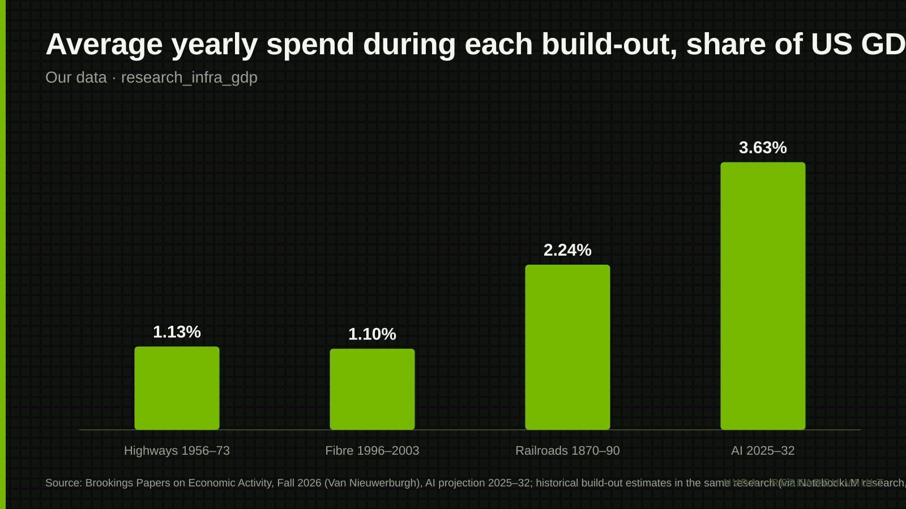
V0046 · Average yearly spend during each build-out, share of US GDP
Baseline chart of our dataset research_infra_gdp
Facts & sources (0)
- our data: data/clean/research_infra_gdp.json

V0047 · Share price, valuation and analyst figures (Google Finance)
Baseline chart of our dataset research_market
Facts & sources (0)
- our data: data/clean/research_market.json

V0048 · NVIDIA as an employer: outside rankings and Bloomberg people data
Baseline chart of our dataset research_people
Facts & sources (0)
- our data: data/clean/research_people.json
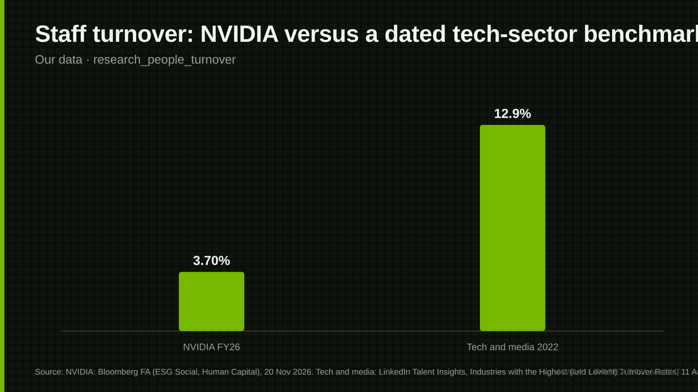
V0049 · Staff turnover: NVIDIA versus a dated tech-sector benchmark
Baseline chart of our dataset research_people_turnover
Facts & sources (0)
- our data: data/clean/research_people_turnover.json
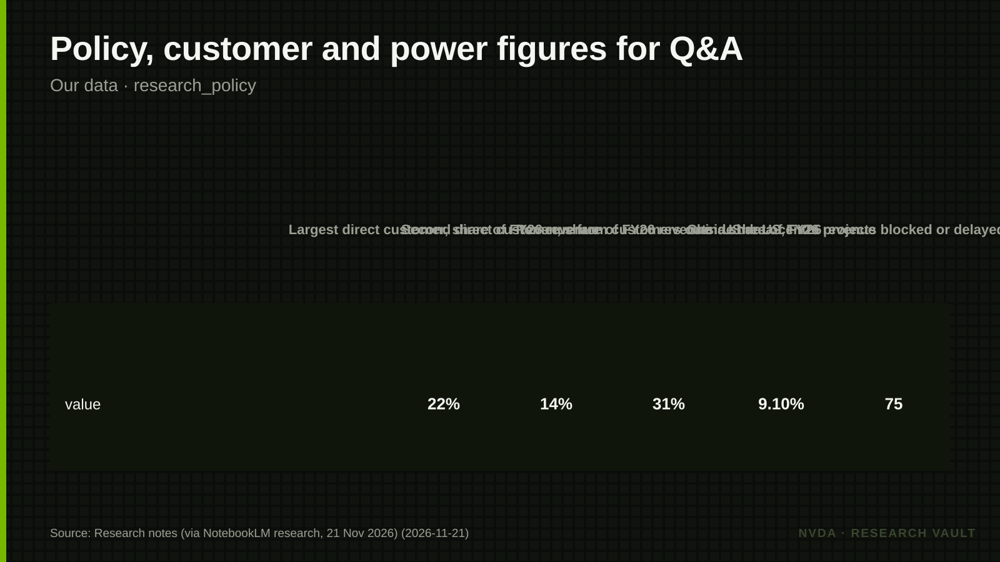
V0050 · Policy, customer and power figures for Q&A
Baseline chart of our dataset research_policy
Facts & sources (0)
- our data: data/clean/research_policy.json
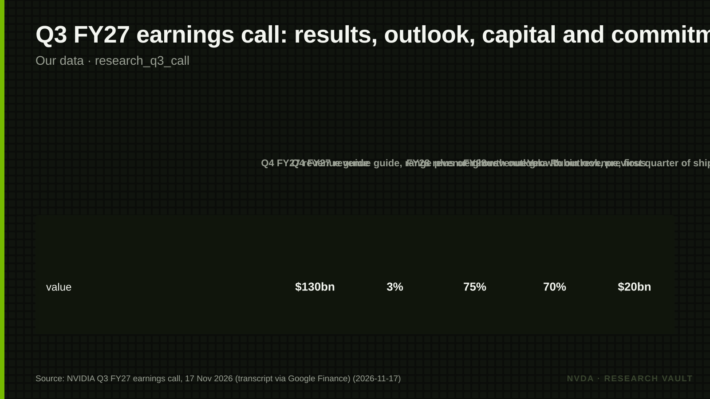
V0051 · Q3 FY27 earnings call: results, outlook, capital and commitments
Baseline chart of our dataset research_q3_call
Facts & sources (0)
- our data: data/clean/research_q3_call.json
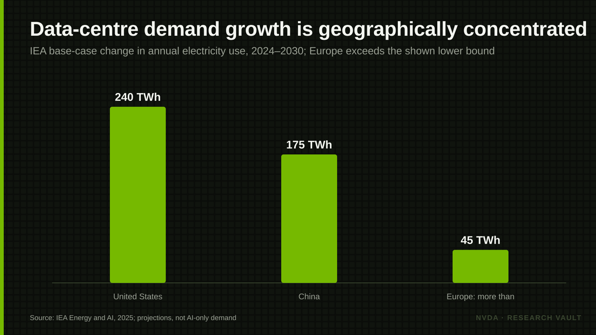
V0052 · Data-centre demand growth is geographically concentrated
IEA base-case growth from 2024 to 2030; Europe is more than 45 TWh, shown at its lower bound.
Facts & sources (3)
- F0013 IEA projects data centre electricity consumption in United States increases by around 240 TWh from 2024 to 2030 in its base case.
- F0014 IEA projects data centre electricity consumption in China increases by around 175 TWh from 2024 to 2030 in its base case.
- F0015 IEA projects data centre electricity consumption in Europe increases by more than 45 TWh from 2024 to 2030 in its base case.
- International Energy Agency (2025-04-10) https://www.iea.org/reports/energy-and-ai/energy-demand-from-ai
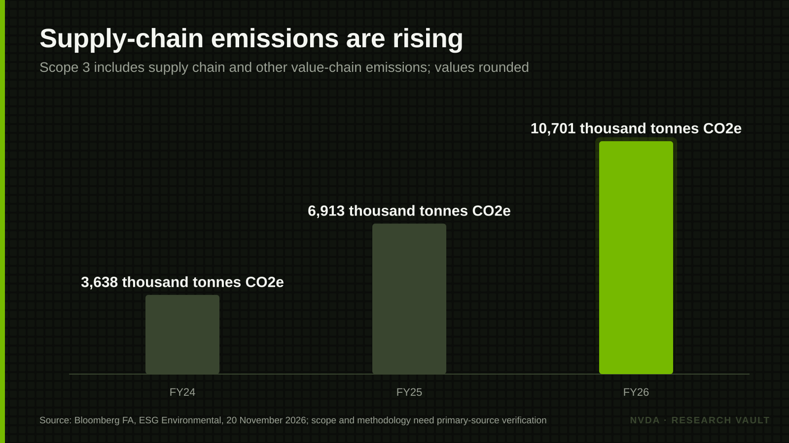
V0053 · Supply-chain emissions are rising
Reported Scope 3 increased; Bloomberg series should be reconciled to NVIDIA disclosure.
Facts & sources (3)
- F0022 Bloomberg data records NVIDIA Scope 3 emissions of 3638.43 thousand tonnes CO2e in FY24.
- F0023 Bloomberg data records NVIDIA Scope 3 emissions of 6912.58 thousand tonnes CO2e in FY25.
- F0024 Bloomberg data records NVIDIA Scope 3 emissions of 10700.9 thousand tonnes CO2e in FY26.
- our data: data/clean/nvda_emissions.json
Prepared answers
Q0001 · How much electricity could data centres consume globally, and is all of it AI?
- Data centres include AI and other computing, so their total is not an AI-only footprint.
- The IEA estimates 415 TWh in 2024 and projects 945 TWh in 2030 in its base case.
- This is a forecast, and local grid pressure can be serious even if the global share remains modest.
F0001, F0003, F0007
Q0002 · Do more efficient NVIDIA chips mean AI electricity demand will fall?
- No. Efficiency per workload can improve while total demand rises as usage expands.
- NVIDIA claims up to 25x lower energy for a specified Blackwell inference comparison, and up to 10x throughput per megawatt for Rubin on a specified model.
- These are vendor claims, not universal or independently verified results; the IEA still projects rising data-centre electricity use.
F0011, F0012, F0003
Q0003 · Could electricity constraints delay AI infrastructure expansion?
- Yes. Grid connections and generation can constrain deployment, especially in local clusters.
- The IEA estimates about 20% of planned data-centre projects could face delays if grid risks are not addressed.
- This is a risk estimate, not a prediction that those projects will definitely be delayed.
F0007
Q0004 · Are NVIDIA operational energy needs falling as its products become more efficient?
- No. Bloomberg records total energy use increasing from 815.86 thousand MWh in FY25 to 1,053.48 thousand MWh in FY26.
- Renewable energy is reported at 1,053.48 thousand MWh in FY26, but that does not establish the share of renewable electricity or customer energy use.
- Ask for independently verified absolute reductions and details of renewable procurement.
F0025, F0026, F0027
Q0005 · Do near-zero market-based electricity emissions mean NVIDIA has solved its climate impact?
- No. Market-based operational electricity emissions are only one part of the footprint.
- Bloomberg data shows supply-chain and other Scope 3 emissions far exceed market-based Scope 2.
- These figures do not show that supply-chain or customer electricity emissions have been eliminated.
F0021, F0024
Q0006 · What is NVIDIA’s latest public CDP climate score?
- We have not verified NVIDIA’s latest public score and should not guess.
- CDP says its public scores for the current disclosure cycle are scheduled for release on December 2, 2026.
- Check the prior public score and then update the answer after the release.
F0028